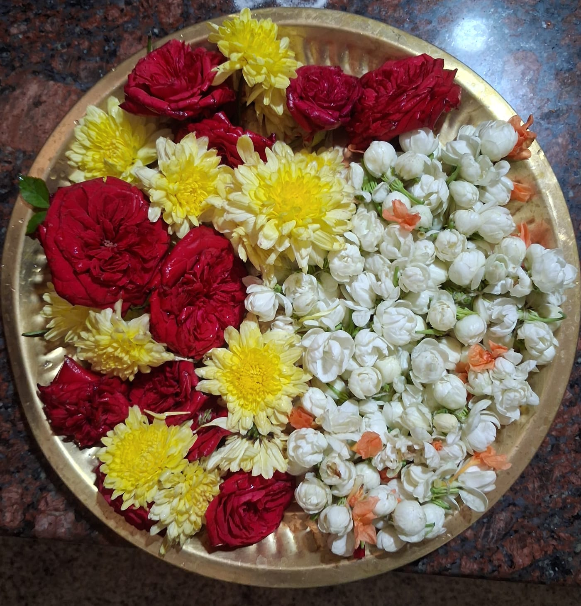
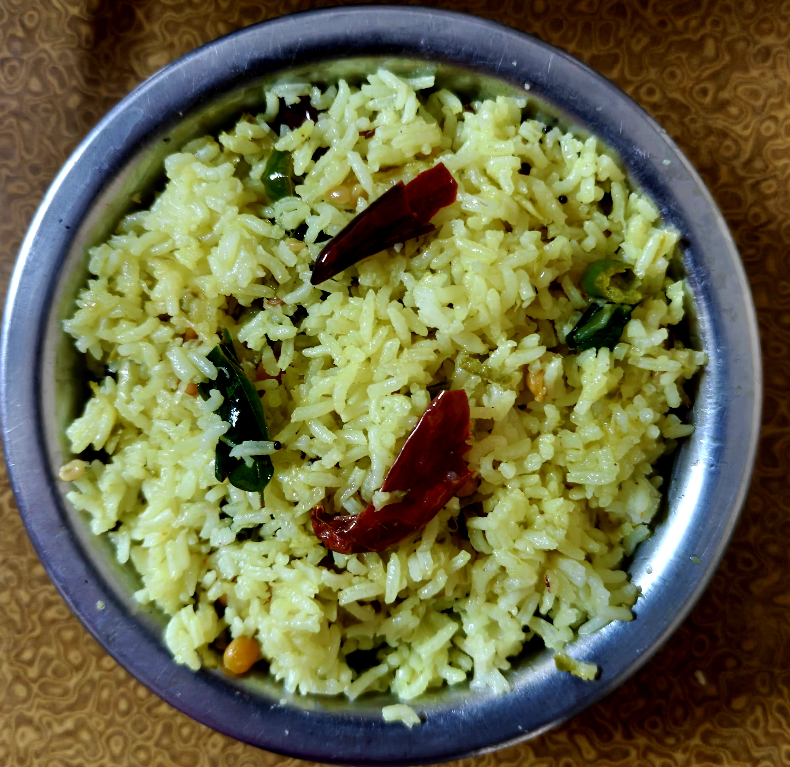
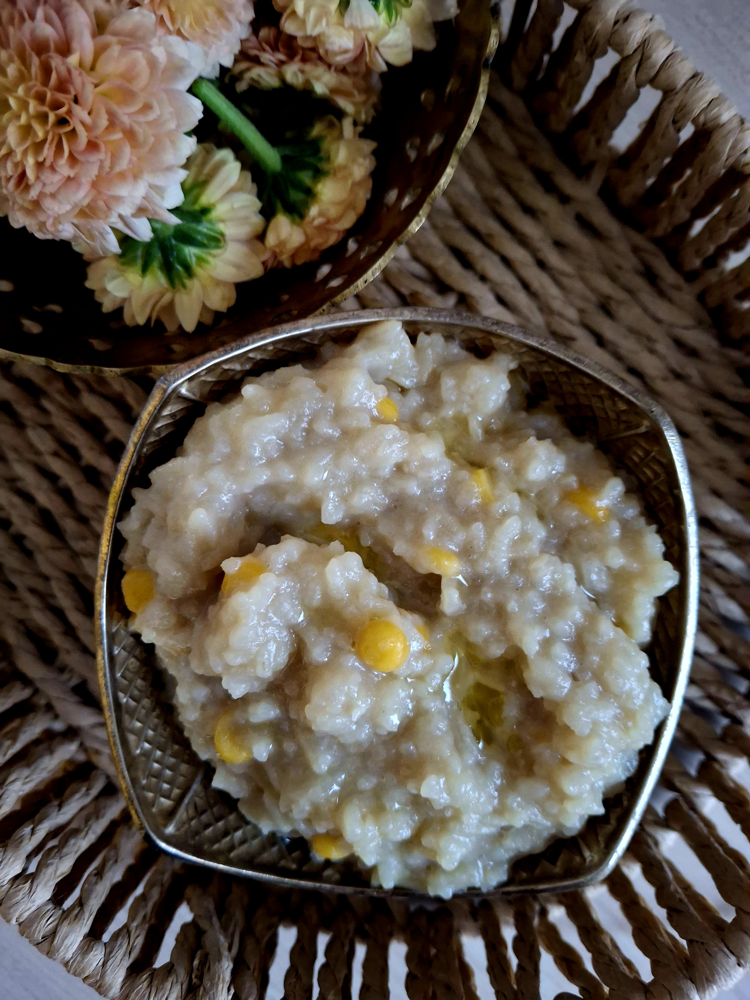

Of all the festivals throughout the year, Akshaya Tritiya and Gowri Habba are the ones that really stay with me. I never used to rank these festivals, but from a distance, they’re the traditions I find myself holding onto the most.
There is a certain care that goes into celebrating every festival at home, following every ritual perfectly. These two stand out because of the warmth they bring—the house filled with the smell of fresh chandan, and the bright colors of flowers and mangoes.
Especially with Akshaya Tritiya, everything feels fresh. The season has a slow buildup; right after Ugadi, the Kalasa is set on the Thadige. It’s a dedicated process—carefully changing the Kalasa every Tuesday and Friday. I’ve always loved this rhythm because it keeps a fresh, sacred energy alive for weeks.
For those who didn't grow up with this, the "Thadige" (the third day of the lunar month) after Ugadi marks the real start of the summer transition. By the time the third Thadige—Akshaya Tritiya—arrives, the "Akshaya" part kicks in, which literally means "never diminishing" or "eternal."
The ritual represents the goddess Gowri staying in the house, and refreshing the Kalasa keeps that hospitality alive until the final celebration. By the time it is time to move it, the doorways are lined with fresh mango leaves and the air is thick with the scent of summer.

In the peak of summer, mango rice, payasa, kosambri, and panaka are the perfect combination, especially with the house smelling of fresh jasmine.
The Recipes
My mom isn’t really the type to have kitchen hacks—she saves her tips and tricks for everything else in life!
Mango Rice
Mango rice is just mango rice—the classic version everyone knows. To make it, you just use a normal tempering of chana dal, urad dal, hing, curry leaves, peanuts, and turmeric powder. After the peanuts turn crunchy, add the grated mango and turn off the stove, then add salt and rice accordingly.

Akki-Kadlebele Payasa
However, I’d like to include the recipe for Akki-Kadlebele Payasa. It’s a comforting blend of rice and chana dal sweetened with jaggery that rounds off the meal perfectly.
The Method
Soak a handful of chana dal for 20 minutes (preferably in hot water). Cook half a glass of rice and the soaked chana dal together using a 1:3 ratio (1 part rice/dal to 3 parts water). Once cooked, add jaggery (1:1 ratio with the rice) and let it melt completely. Turn off the stove and wait for 5 minutes before adding boiled milk—this pause ensures the milk doesn't curdle from the jaggery. Finish it off with a spoonful of ghee.

It’s a meal that captures the season—simple, bright, and exactly how I remember summer.